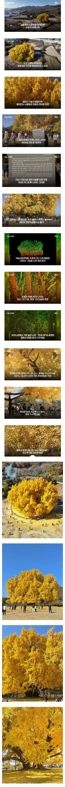

1300살

1300살
인천 장수마을 은행나무 작년에 사람 겁나몰렸다던데
올해도 그럴려나
대치동 살았을때 있던 은행나무도 엄청 컸는데...검색해보니 530살이네..
대치동 은행나무 하면 나옴..
저거랑 비교하면 애기 크기네..
그러게 그것도 컸는데 저건 진짜어마어마하겠네
어쩐지 내가아는 1천살먹은 나무가 저거보다 작은데 이상하다했어
진짜 판타지같아
데뷔용 프로필 나이라서 살짝 감았나보네
어린 척했네 ㄷㄷ
만두축제가면 저거도봐야겟네
어렸을땐 저 나무 그냥 만지고 그랬었는데
사람도 얼마없고
이젠 사진찍기도 힘들더라 ㅋㅋㅋ
얼마나 감은거여
3개